copy_number_vaf_plot.RdCreate a genome-wide copy number plot for one sample and (optionally) display mutation VAF.
copy_number_vaf_plot(
this_sample_id,
just_segments = FALSE,
coding_only = FALSE,
one_chrom,
genes_to_label,
this_seq_type = "genome",
from_flatfile = TRUE,
use_augmented_maf = TRUE,
add_chr_prefix = FALSE
)The sample_id for the sample to plot.
Specify whether only the segments will be plotted (instead of mutation VAF). Default is FALSE.
Optional. Set to TRUE to restrict to plotting only coding mutations.
Subset plot to one chromosome.
Optional. Provide a vector of genes to label (if mutated). Can only be used with coding_only (see above).
Seq type for returned CN segments. One of "genome" (default) or "capture".
If set to true the function will use flatfiles instead of the database.
Boolean statement if to use augmented maf, default is TRUE.
If TRUE, "chr" prefix will be added to chr column. Default is FALSE.
Nothing
This function takes a sample ID and internally calls assign_cn_to_ssm to get copy number segments for plotting.
This plot is visualizing mutation VAFs per default, this can be turned off with setting just_segments to TRUE.
This only plots the segments. The user can also restrict the plotted segments to coding regions. To do so, set coding_only= TRUE,
and then specify the genes of interest (coding regions) with the genes_to_label (vector of genes).
#build plot
copy_number_vaf_plot(this_sample_id = "HTMCP-01-06-00422-01A-01D")
#> trying to find output from: battenberg
#> looking for flatfile: /projects/nhl_meta_analysis_scratch/gambl/results_local/gambl/battenberg_current/99-outputs/seg/genome--projection/HTMCP-01-06-00422-01A-01D--HTMCP-01-06-00422-10A-01D--matched.battenberg.grch37.seg

#coding only
copy_number_vaf_plot(this_sample_id = "HTMCP-01-06-00422-01A-01D",
coding_only = TRUE)
#> trying to find output from: battenberg
#> looking for flatfile: /projects/nhl_meta_analysis_scratch/gambl/results_local/gambl/battenberg_current/99-outputs/seg/genome--projection/HTMCP-01-06-00422-01A-01D--HTMCP-01-06-00422-10A-01D--matched.battenberg.grch37.seg
